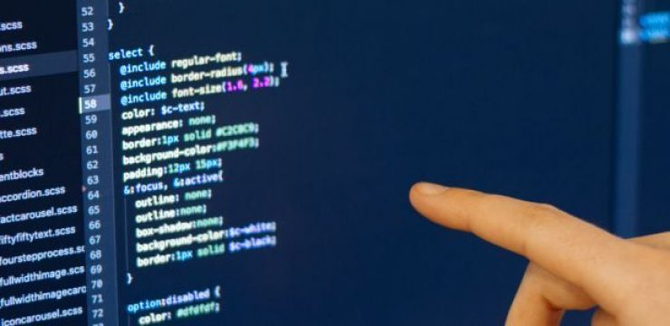
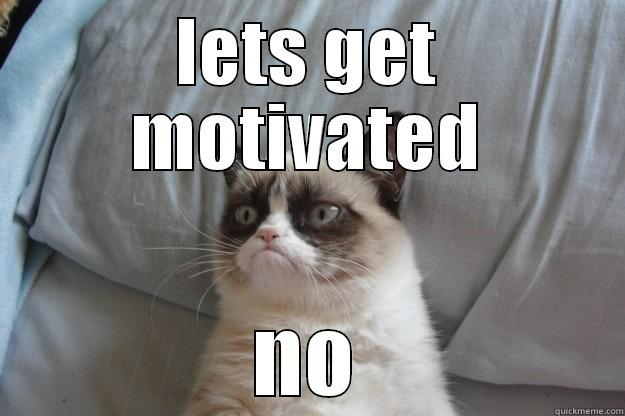

На первых двух курсах мои программы представляли из себя, не побоюсь слова, говнокод (когда я открывала старые программы на более старших курсах, то я сама была в шоке от оформления кода). Я видела на одной строке несколько вызываемых функций, операторы, и всё это могло писаться без пробела. С первого по четвертый курс преподы в основном только требовали от нас знания языка, применение изученных алгоритмов в решении задачи. Нам даже ничего не говорили о стиле программирования, а что студенту «работает же – не трогай». Всё изменилось с середины четвёртого курса. Когда мы более менее справлялись с поставленными задачами, преподаватели стали делать замечания по оформлению кода. У меня даже есть отчеты, исчерканные, со стрелочками и рекомендациями для изменения расположения кусков кода. «Чистота» кода на первых трех курсах у меня была почти на нуле. Но потом ты стараешься писать код должным образом, чтоб не стыдно было показать другим.
Так что, не бойтесь показывать свой код более опытным программистам, вашим одногруппникам, не бойтесь критики, ведь лучше раньше осознать свои ошибки и научиться писать читабельный, грамотный код. Участвуйте в открытых проектах или хотя бы посмотрите, как пишут программы, например, на github. К тому же сейчас есть книги с рекомендациями по стилю написания кода, что может помочь привить «чистоту кода» уже на начальных стадиях обучения.

Неоднократно сейчас слышу от более молодых сотрудников: «Доучился уже до вротого(n-го) курса, а скучные лекции, занятия, преподы только желание убивают». Мне в этом плане, наверное, повезло немного больше. Было у нас несколько преподавателей (они еще работают в других компаниях), смотря на которых ты думаешь: «Хочу быть таким же». Их наставления, истории из жизни вдохновляли. Благодаря таким людям у студентов появляется огонь в глазах.
"Чтобы внушить чувства другим, вы сами должны быть поглощены ими. Чтобы вызвать слезы у других, вы сами должны заплакать. Чтобы убедить других, вы сами должны верить."(Уинстон Черчилль)
Если в институте ваши преподы неинтересно читают лекции по бумажке, не дают интересные задания для лабораторных занятий, то не надо бросать программирование (у меня есть парочка знакомых, которые действительно бросили программирование), не успев начать. Сейчас многие компании проводят бесплатные семинары и предоставляют бесплатное обучение/стажировку летом. Поверьте, пообщавшись с опытными программистами, почувствуете себя иначе. К тому же после стажировки у вас появляется возможность остаться там работать.